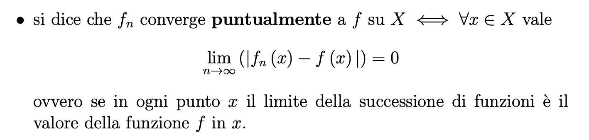
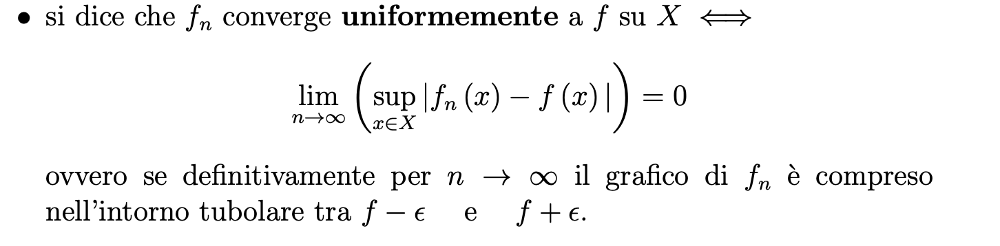
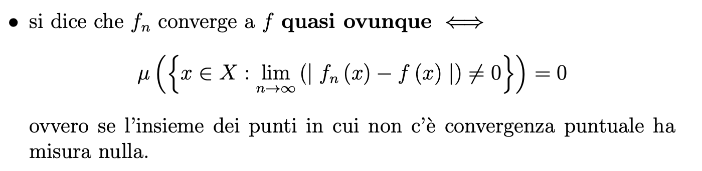
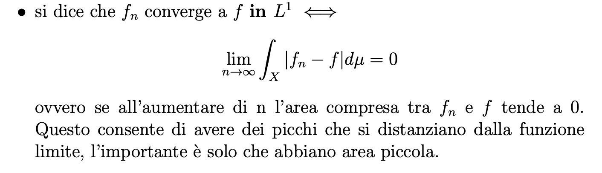
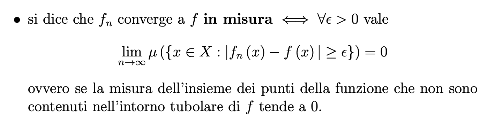
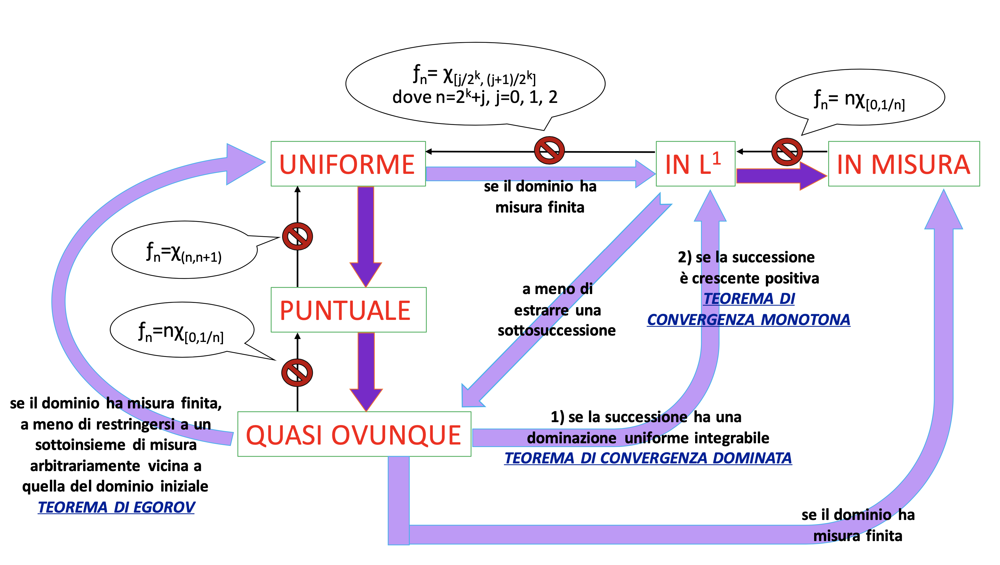

.


Modi di Convergenza
conoscere
Definizioni
Convergenza puntuale
Una successione di funzioni converge puntalmente se per ogni punto x il limite della successione di funzioni corrisponde al valore della funzione f in x
Convergenza uniforme
Una successione di funzioni converge uniformemente se definitivamente per n → ∞ il grafico di f è compreso nell’intorno tubolare tra f − ε e f + ε.
Convergenza quasi ovunque
Una successione di funzioni converge quasi ovunque se l’insieme dei punti in cui non c'è convergenza puntuale ha misura nulla.
Convergenza in L1
Una successione di funzioni converge in L1 se all’aumentare di n l’area compresa tra fn e f tende a 0.
Convergenza in misura
Una successione di funzioni converge in misura se la misura dell’insieme dei punti della funzione che non sono contenuti nell’intorno tubolare di f tende a 0.





Saper collegare
Relazioni tra i modi di convergenza


Saper applicare
Test
Metti alla prova le tue conoscenze con il seguente test interattivo.
- Riconoscere i modi di convergenza dal grafico animato
- Usare lo schema delle implicazioni per analizzare criticamente i quesiti
- Valutare criticamente la propria preparazione
Strumento grafico
Plotter interattivo per successioni di funzioni
Visualizzatore grafico
Disegna anche tu la successione di funzioni che stai studiando. Immetti nell'apposito box laterale l'espressione analitica della successione di funzioni in esame. Non ti resta che trascinare lo slider per vederne il comportamneto